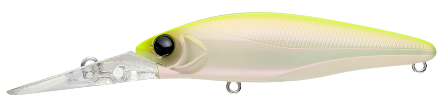
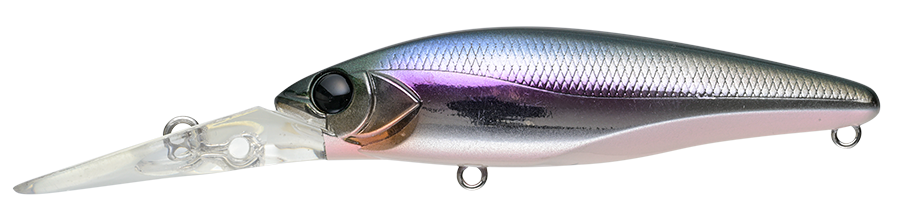
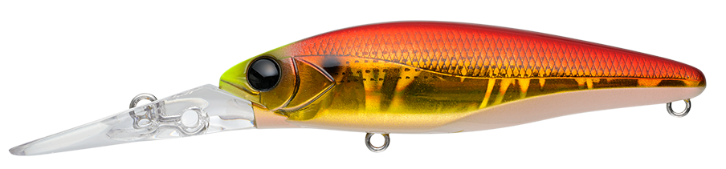
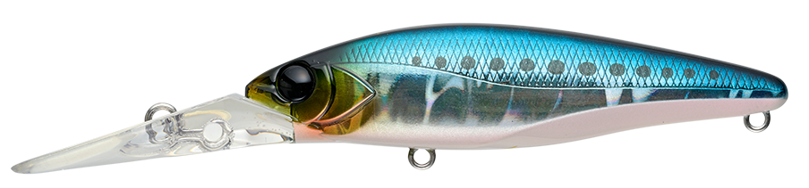

マイヨール80S
（MAYOL80S）
マイヨール80S（MAYOL80S）はAPIA（アピア）のシンキングミノーです。
大阪湾でボートシーバスのキャプテンも務める北添貴行氏が監修した、ボートゲームのストラクチャーディープゾーン攻略にフォーカスした急速潜行ディープダイバー。最大2.5mまで一気に潜り、穴撃ちやストラクチャー周りの深場のシーバスを狙えます。

画像出典:APIA公式HP
スペック
- メーカー
- APIA（アピア）
- タイプ
- シンキング（ディープダイバーミノー）
- 全長
- 80mm
- 自重
- 15g
- レンジ
- MAX 2.5m
- フック
- #6×2（BKK FANGS-62UA）
- アクション
- タイトピッチウォブリング
- ターゲット
- シーバス
- 価格
- 1,815円（税込）
▼今すぐチェック

マイヨール80Sの特徴
ボートシーバスの“穴撃ち”のために作られた、急速潜行のディープダイバー
-
最大2.5mへの急速潜行
巻き始めから一気に潜る急速潜行タイプで、最大潜行レンジは2.5m。ストラクチャー周りの深場にすばやくルアーを届けられる。急浮上による追い食いの誘発も狙える。
-
マグネット重心移動で近距離でも失速しにくい
マグネット式の重心移動を採用し、近距離への投入でも失速しにくい直進性を持つ。ボートからの正確なピン撃ちに向く。
-
細かいピッチのタイトウォブリング
細かいピッチのタイトなウォブリングでアピール。リアフックのアイ位置など、ボートゲームの経験が反映された設計になっている。
マイヨール80Sの使い方
基本はストラクチャーの際や穴にキャストしてからの、ただ巻き。急速潜行で一気にレンジに入れ、タイトウォブリングで深場のシーバスにアピールします。
メーカーは急浮上による追い食いの誘発も狙えるとしているので、巻きの速さに強弱を付けてレンジに変化を出すのも有効です。ボートから明暗や橋脚、岸壁の際を正確に撃っていくのが組み立ての基本です。
マイヨール80Sの得意な状況
ボートゲームでのストラクチャー周り、特に橋脚や岸壁の際、穴の奥など深場に付いたシーバスを狙う状況が最大の出番。
表層や中層のルアーでは届かない2m前後のレンジを、短い距離でもすぐに攻められるのが強みです。
ワンポイント
潜行が速いぶん、根掛かりしやすい場所ではロッドを立てて浅めに引くなど、レンジの調整が大切です。
近距離でも失速しにくい直進性を活かして、ボートからはストラクチャーの際を1つずつ丁寧に撃っていくのが釣果への近道です。
マイヨールシリーズの使い分け
| モデル | 全長／自重 | 得意な場面 |
|---|---|---|
| マイヨール70SL | 70mm／8.5g | コンパクトなシルエット。より小さいベイトに合わせたい場面に |
| マイヨール80S | 80mm／15g | 最大2.5mの急速潜行。ボートのストラクチャー攻略（本記事のモデル） |
マイヨールはボートゲームの経験を反映したシリーズ。ベイトのサイズやレンジに合わせて70SLと80Sを選び分けるとわかりやすくなります。70SLの詳細はマイヨール70SLの記事で紹介しています。
人気カラー
マイヨール80Sは全11色展開。ボートシーバスでオススメのカラーを厳選して紹介します。

チャートバックパールチャートの背中とパールのボディで視認性・アピールとも高い定番。

パニックカタクチカタクチイワシを意識したベイトカラー。

アカキンコノシロコノシロ系ベイトに合わせたアカキン。濁りやローライトにも。

湾岸イワシ湾岸エリアのイワシパターンを意識したナチュラル系。
画像出典:APIA公式HP
マイヨール80Sに似ているルアー
-
 マイヨール70SL
アピア
詳細はこちら＞
マイヨール70SL
アピア
詳細はこちら＞
同じマイヨールシリーズの70mmモデル。より小さいシルエットで、ベイトが小さいときや食わせ重視の場面での持ち替えに。
-
 アタル70S（ataru 70S）
ima
詳細はこちら＞
アタル70S（ataru 70S）
ima
詳細はこちら＞
全長70mm・自重11gのシンキングシャッド。レンジ50〜180cmで、ボートからのストラクチャーゲームでも使われる王道シャッド。
-
 クミホン70S
ブルーブルー
詳細はこちら＞
クミホン70S
ブルーブルー
詳細はこちら＞
全長70mm・自重9gのピン撃ちシャッド。壁際や橋脚などのピンスポット攻略というコンセプトがマイヨール80Sと近い。